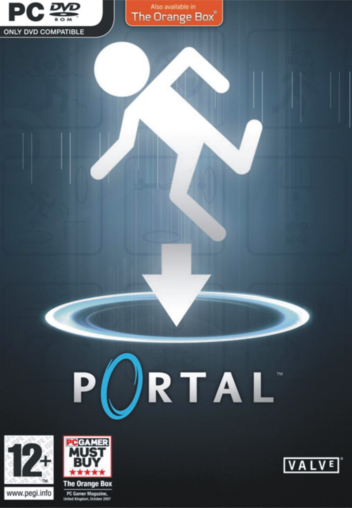
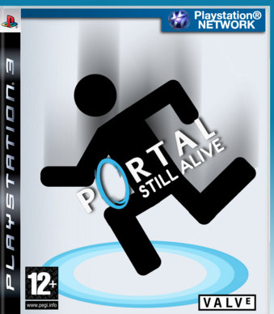
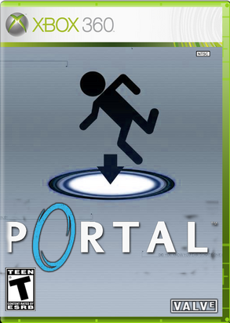
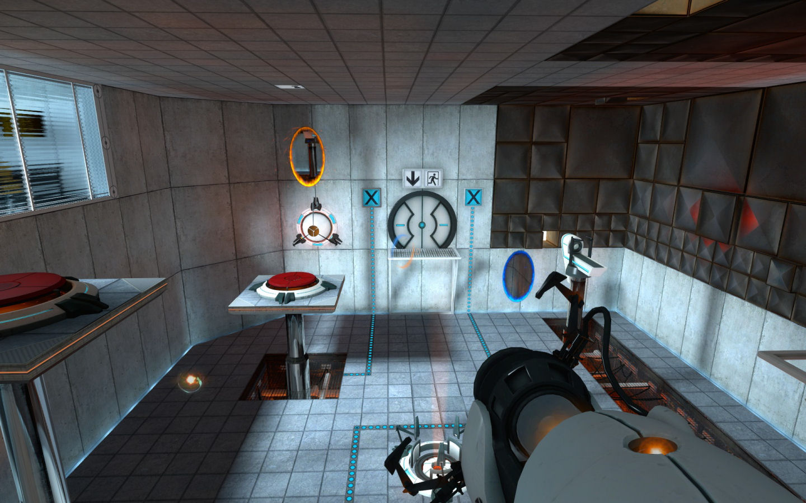
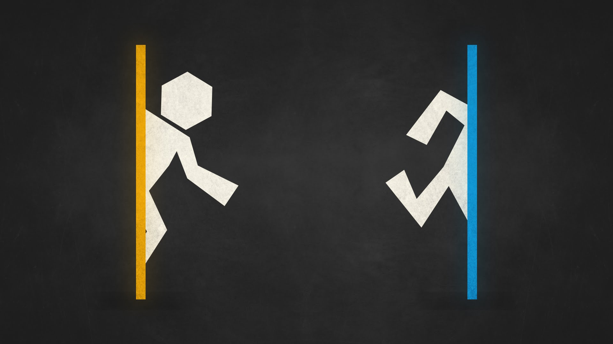

Portal
Portal is a 2007 first-person puzzle-platform video game developed by Valve Corporation, released in a bundle package called The Orange Box for Microsoft Windows via its digital distribution service Steam and Xbox 360 on October 9, 2007, the PlayStation 3 on December 11, 2007, OS X on the Mac-compatible Steam platform on May 12, 2010, a Linux version on Steam as a beta on May 2, 2013 and released on June 24, 2013, and for Android as a port for the Nvidia Shield on May 12, 2014.
  The Game consists primarily of a series of puzzles that must be solved by teleporting the player's character and simple objects using "the Aperture Science Handheld Portal Device", a device that can create inter-spatial portals between two flat planes. The player-character, Chell, is challenged and taunted by an artificial intelligence named GLaDOS (Genetic Lifeform and Disk Operating System) to complete each puzzle in the Aperture Science Enrichment Center using the portal gun with the promise of receiving cake when all the puzzles are completed. The game's unique physics allows momentum to be retained through portals, requiring creative use of portals to maneuver through the test chambers. This gameplay element is based on a similar concept from the game Narbacular Drop; many of the team members from the DigiPen Institute of Technology who worked on Narbacular Drop were hired by Valve for the creation of Portal, making it a spiritual successor to the game.
Portal was acclaimed as one of the most original games of 2007, despite being considered for its short duration and limited story. The game received praise for its originality, unique gameplay and dark story with a humorous series of dialogue. GLaDOS, voiced by Ellen McLain in the English-language version, received acclaim for her unique characterization, and the end credits song "Still Alive", written by Jonathan Coulton for the game, was acclaimed for its original composition and humorous twist. Excluding Steam download sales, over four million copies of the game have been sold since its release, spawning official merchandise from Valve including plush Companion Cubes, as well as fan recreations of the cake and portal gun, a standalone version, Portal: Still Alive, on the Xbox Live Arcade service on October 22, 2008, which added an additional 14 puzzles to the gameplay, and a sequel, Portal 2, which was released in 2011, adding several new gameplay mechanics and a cooperative multiplayer mode.
| Review scores | |
|---|---|
| Publication | Score |
 |
9/10 |
 |
9/10 |
 |
8.2/10 |